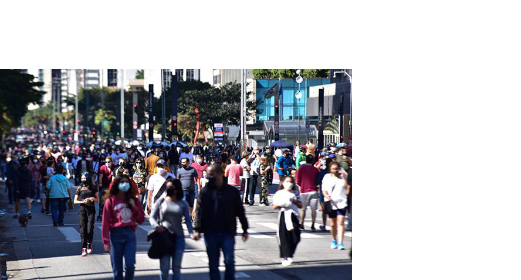

População cresceu cerca de 0,7% em relação ao ano passado; instituto afirma que nova estimativa ainda não incorpora os efeitos da pandemia da Covid-19
O Globo
27/08/2021 - 09:14 / Atualizado em 27/08/2021

RIO — A população brasileira atingiu a marca de 213.317.639 habitantes, segundo estimativa do Instituto Brasileiro de Geografia e Estatística (IBGE), publicada no Diário Oficial da União nesta sexta-feira. Conforme noticiado pelo G1, o valor se refere a 1 de julho deste ano e representa um crescimento de cerca de 0,7% em relação à população estimada em 2020, de 211,8
Em 2021, São Paulo segue o estado mais populoso, com 46,649 milhões de pessoas, concentrando 21,9% da população total do país. Em seguida estão Minas Gerais, com 21,411 milhões, e Rio de Janeiro, com 17,463 milhões.
A menor população foi estimada em Roraima, com 652.713 habitantes. No entanto, o estado teve o maior aumento percentual em um ano, de 3,4%. Já o Piauí, com 3,289 milhões de pessoas, registrou o menor aumento percentual, de 0,2%.
Os cinco estados menos populosos somam cerca de 5,8 milhões de pessoas e estão na região Norte. Apenas três têm menos de 1 milhão de habitantes: além de Roraima, o Amapá, com 877.613, e o Acre, com 906.876. Os outros dois são Tocantins, com 1.607.363, e Rondônia, com 1.815.278.
No entanto, segundo os pesquisadores, as novas estimativas populacionais não incorporam os efeitos da pandemia da Covid-19. Márcio Mitsuo Minamiguchi, gerente de Estimativas e Projeções de População do IBGE, afirma que dados preliminares do Registro Civil e do Ministério da Saúde apontam para um excesso de mortes, principalmente entre idosos, e uma diminuição dos nascimentos.
Também é possível que tenham ocorrido alterações nos fluxos migratórios. As implicações desses fatores no tamanho da população serão verificadas apenas no próximo Censo Demográfico, previsto para ser realizado em 2022.
“Como a pandemia ainda está em curso e devido à ausência de novos dados a respeito da migração, que juntamente com a mortalidade e fecundidade constituem as chamadas componentes da dinâmica demográfica, ainda não foi elaborada uma projeção da população para os estados e o Distrito Federal que incorpore os efeitos do contexto sanitário atual na população”, explica Minamiguchi, em nota.
O gerente do estudo acrescenta que o próximo Censo Demográfico apresentará não apenas uma atualização dos contingentes populacionais, como também subsidiará futuras projeções, "fundamentais para compreender as implicações da pandemia sobre a população, não somente no curto, mas também no médio e longo prazo”.